markeR provides a suite of methods for using gene sets (signatures) to quantify and evaluate the extent to which a given gene signature marks a specific phenotype. The package implements various scoring, enrichment and classification approaches, along with tools to compute performance metrics and visualize results.
Table of Contents
Installation
The user can install the development version of markeR from GitHub with:
# install.packages("devtools")
devtools::install_github("DiseaseTranscriptomicsLab/markeR")Main Functions and Future Modules
The current release of markeR includes four primary functions for score-based analysis:
-
CalculateScores: Calculates gene signature scores for each sample using either the ssGSEA, log2 median-centered or ranking method. -
PlotScores: Calculates and displays the calculated scores across conditions using violin plots, density plots, heatmaps or volcano-like plots, depending on the chosen parameters. -
ROC_Scores: Generates ROC curves for different scoring methods across contrasts, allowing users to visualize performance differences. -
AUC_Scores: Generates heatmaps for each gene signature, with methods as columns and contrasts as rows, summarizing AUC values in a heatmap format.
Additionally, it includes a function for FDR calculation based on random sets of genes for each signature:
-
FDR_Simulation: Computes false discovery rates using random gene sets.
Tthe package also includes several functions for enrichment-based analysis:
-
calculateDE: Performs differential expression analysis. -
plotVolcano: Generates volcano plots to visualize differentially expressed genes. -
runGSEA: Performs GSEA usingfgseafor each contrast in a list of differential expression results.
-
plotGSEAenrichment: Generates enrichment plots for gene sets using thefgsea::plotEnrichment()function -
plotNESlollipop: Generates a lollipop plot to visualize Gene Set Enrichment Analysis (GSEA) results. -
plotCombinedGSEA: Creates a scatter plot visualizing multiple GSEA (Gene Set Enrichment Analysis) results across different contrasts.
When analyzing data, it is often unclear whether a given variable is meaningfully associated with a target score. To assist in this exploratory process, the package also provides statistical tests and visualizations to assess relationships between variables of different types (called the Variable Association module):
-
VariableAssociation_Scores: Assesses the relationship between metadata variables and computed scores using effect size estimation, statistical tests, and visualizations. -
VariableAssociation_GSEA: Evaluates how metadata variables influence gene set enrichment results, identifying significant associations with enrichment scores.
markeR also includes some functions for visualising individual genes from a gene signature:
-
IndividualGenes_Violins: creates violin plots of gene expression data with jittered points and optional faceting, allowing for visualization of individual gene expression distributions across sample groups. -
CorrelationHeatmap: computes and visualizes a correlation heatmap for a given set of genes. Optionally, the heatmap can be generated separately for different conditions based on metadata. -
ExpressionHeatmap: generates an expression heatmap with customizable sample annotations for a given set of genes. -
ROCandAUCplot: computes ROC curves and AUC values for each gene based on gene expression data and sample metadata. It can generate ROC plots, an AUC heatmap, or both arranged side‐by‐side. -
CohenDH_IndividualGenes: computes Cohen’s d for each gene based on gene expression data and sample metadata. The resulting effect sizes are then visualized as a heatmap. -
plotPCA: performs PCA on a given dataset and visualizes the results using ggplot2. It allows users to specify genes of interest (to understand if they are sufficient to explain the main variance in the data), customize scaling and centering, and color points based on a metadata variable.
Example
We will be using an already pre-processed gene expression dataset, derived from the Marthandan et al. (2016) study (GSE63577), that includes human fibroblast samples cultured under two different conditions: replicative senescence and proliferative control. The dataset has already been filtered and normalized using the edgeR package, and corrected for batch effect as described in Schneider et al. (2024). For more information about the dataset structure, see the help pages for ?counts_example and ?metadata_example.
This dataset serves as a working example to demonstrate the main functionalities of the markeR package. In particular, it will be used to showcase the two primary modules designed for benchmarking gene signatures:
- Score: calculates expression-based signature scores for each sample, and
- Enrichment: evaluates the over-representation of gene signatures within ranked gene lists.
To keep things simple and illustrative, we use a basic senescence gene signature consisting of a small set of well-established senescence-associated genes commonly reported in the literature.
# Define simple Senescence Signature
SimpleSenescenceSignature <- c("CDKN1A", "CDKN2A", "GLB1","TP53","CCL2", "LMNB1", "MKI67" )
data(counts_example)
# Load example data
counts_example[1:5,1:5]
#> SRR1660534 SRR1660535 SRR1660536 SRR1660537 SRR1660538
#> A1BG 9.94566 9.476768 8.229231 8.515083 7.806479
#> A1BG-AS1 12.08655 11.550303 12.283976 7.580694 7.312666
#> A2M 77.50289 56.612839 58.860268 8.997624 6.981857
#> A4GALT 14.74183 15.226083 14.815891 14.675780 15.222488
#> AAAS 47.92755 46.292377 43.965972 47.109493 47.213739For illustration purposes of different variable types, let’s imagine we also had two more variables: one defining the number of days that passed between sample preparation and sequencing, and one defining the person that processed it. These variables are completely random, and not from the initial study.
data(metadata_example)
set.seed("123456")
metadata_example$person <- sample(c("John","Ana","Francisca"),39, replace = T)
metadata_example$days <- sample(c(1:20),39, replace = T)
head(metadata_example)
#> sampleID DatasetID CellType Condition SenescentType
#> 252 SRR1660534 Marthandan2016 Fibroblast Senescent Telomere shortening
#> 253 SRR1660535 Marthandan2016 Fibroblast Senescent Telomere shortening
#> 254 SRR1660536 Marthandan2016 Fibroblast Senescent Telomere shortening
#> 255 SRR1660537 Marthandan2016 Fibroblast Proliferative none
#> 256 SRR1660538 Marthandan2016 Fibroblast Proliferative none
#> 257 SRR1660539 Marthandan2016 Fibroblast Proliferative none
#> Treatment person days
#> 252 PD72 (Replicative senescence) Ana 6
#> 253 PD72 (Replicative senescence) Ana 18
#> 254 PD72 (Replicative senescence) John 19
#> 255 young Ana 2
#> 256 young Francisca 9
#> 257 young John 10Visualise Individual Genes from Senescence Signature
markeR provides a suite of functions to explore the expression and behavior of individual genes within a signature. These tools are especially useful when the user want to inspect how specific genes contribute to a signature’s overall behavior.
Expression Heatmap
The ExpressionHeatmap function generates a heatmap to display the expression levels of selected senescence genes across samples. Samples are annotated by a chosen condition, and expression values are color-scaled for easy visual comparison. Clustering options and customizable color palettes allow for flexible and informative visualization.
annotation_colors <- list(
Condition = c(
"Senescent" = "#65AC7C", # Example color: greenish
"Proliferative" = "#5F90D4" # Example color: blueish
)
)
ExpressionHeatmap(data=counts_example,
metadata = metadata_example,
genes=SimpleSenescenceSignature,
annotate.by = c("Condition"),
annotation_colors = annotation_colors,
colorlist = list(low = "#3F4193", mid = "#F9F4AE", high = "#B44141"),
cluster_rows = TRUE,
cluster_columns = FALSE,
title = "Senescence Genes",
titlesize = 20,
legend_position = "right",
scale_position="right")
Expression Violins
The IndividualGenes_Violins function creates violin plots to visualize the expression distributions of selected senescence genes across conditions. Jittered points represent individual samples, and grouping (x axis, GroupingVariable) and color variables (ColorVariable and ColorValues) from the metadata allow for additional stratification and insight. Customization options include layout, point size, colors, and axis labeling.
senescence_triggers_colors <- c(
"none" = "#E57373", # Soft red
"Telomere shortening" = "#4FC3F7" # Vivid sky blue
)
IndividualGenes_Violins(data = counts_example,
metadata = metadata_example,
genes = SimpleSenescenceSignature,
GroupingVariable = "Condition",
plot=T,
ncol=NULL,
nrow=1,
divide=NULL,
invert_divide=FALSE,
ColorValues=senescence_triggers_colors,
pointSize=2,
ColorVariable="SenescentType",
title="Senescence Genes",
widthTitle=16,
y_limits = NULL,
legend_nrow=1,
xlab="Condition",
colorlab="") Correlation Heatmap
The CorrelationHeatmap function displays pairwise correlations between selected genes, helping to reveal co-expression patterns within the senescence signature. Correlations can be computed separately for different conditions, and the heatmap is fully customizable with options for clustering, color scaling, and correlation method (e.g., Spearman or Pearson).
CorrelationHeatmap(data=counts_example,
metadata = metadata_example,
genes=SimpleSenescenceSignature,
separate.by = "Condition",
method = "spearman",
colorlist = list(low = "#3F4193", mid = "#F9F4AE", high = "#B44141"),
limits_colorscale = c(-1,0,1),
widthTitle = 16,
title = "Senescence Genes",
cluster_rows = TRUE,
cluster_columns = TRUE,
detailedresults = FALSE,
legend_position="right",
titlesize=20)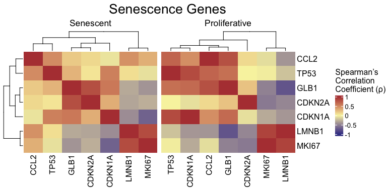
ROC and AUC
The ROCandAUCplot function evaluates the predictive power of individual genes in the signature by computing ROC curves and AUC values based on a binary classification (e.g., senescent vs. proliferative). If the selected grouping variable has more than two levels, the user can specify the reference group using the class parameter — for example, if I am interested in a variable with levels A, B, C and D, setting class = c("A", "B") will compare group A/B versus the remaining groups (C/D). Additionally, the user can use the group_var parameter to split and display results separately for each level of another metadata variable — allowing for subgroup-specific ROC analyses. Outputs include individual ROC plots and an AUC heatmap, with customizable layout, color schemes, and clustering options—ideal for identifying genes with strong discriminative ability.
senescence_triggers_colors <- c(
"none" = "#E57373", # Soft red
"Telomere shortening" = "#4FC3F7" # Vivid sky blue
)
ROCandAUCplot(counts_example,
metadata_example,
condition_var = "Condition",
class = "Senescent",
group_var=NULL,
genes=SimpleSenescenceSignature,
plot_type = "all",
heatmap_params = list(col = list( "#F9F4AE" ,"#B44141"),
limits = c(0.5,1),
cluster_rows=T),
roc_params = list(nrow=3,
ncol=3,
colors=senescence_triggers_colors),
commomplot_params = list(widths=c(0.5,0.3)))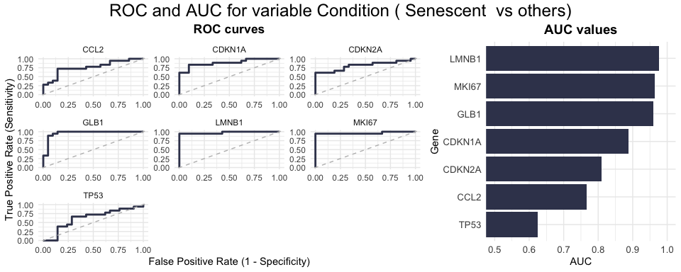
Cohen’s D
The CohenD_IndividualGenes function computes the effect size (Cohen’s d) for each gene, quantifying the magnitude of expression differences between two conditions, given by the variable condition_var. If the selected condition variable has more than two levels, the class parameter specifies which condition will be compared to the rest. Additionally, the user can use the group_var parameter to split and display results separately for each level of another metadata variable. Results are visualized as a heatmap, with customizable color scales and clustering options for easy interpretation of effect sizes across genes.
CohenD_IndividualGenes(counts_example,
metadata_example,
genes=SimpleSenescenceSignature,
condition_var = "Condition",
class = "Senescent",
group_var = NULL,
heatmap_params = list(col = list( "#F9F4AE" ,"#B44141"),
limits = NULL,
cluster_rows=T))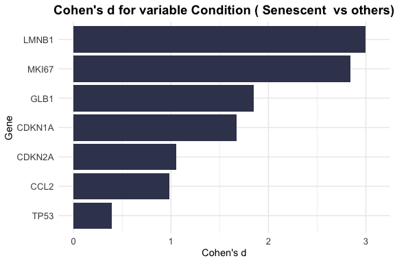
PCA with only genes of interest
The plotPCA function performs principal component analysis (PCA) on a selected set of genes to explore how they contribute to the variance in the dataset, allowing to test if the genes in the signature are sufficient to separate the groups of interest (given by the parameter ColorVariable). This function allows you to focus on specific genes (e.g., senescence signature genes) and visualize their impact on a specific set of principal components. The PCs parameter enables you to specify which principal component pairs to plot, and the results are customizable with color annotations, point sizes, and layout options for comparing conditions or groups.
annotation_colors <- c(
"Senescent" = "#65AC7C", # Example color: greenish
"Proliferative" = "#5F90D4" # Example color: blueish
)
plotPCA(data = counts_example,
metadata = metadata_example,
genes=SimpleSenescenceSignature,
scale=FALSE,
center=TRUE,
PCs=list(c(1,2), c(2,3), c(3,4)),
ColorVariable="Condition",
ColorValues=annotation_colors,
pointSize=5,
legend_nrow=1,
ncol=3,
nrow=NULL)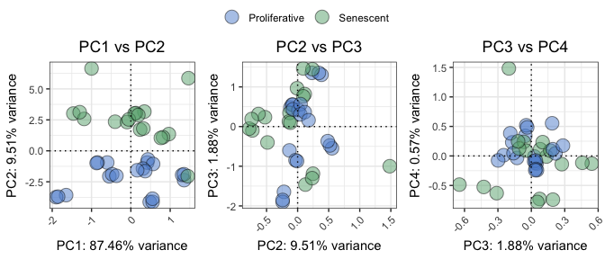
Calculate Senescence Scores
The CalculateScores function computes the signature scores for each sample based on predefined gene sets, such as a senescence signature. It returns a named list where each entry corresponds to a specific signature and includes the calculated scores, along with metadata (if available). When setting method = "all", the function returns a list, where each element corresponds to a scoring method and contains the respective data frame of scores, allowing comparison between methods. The function allows users to select from three different scoring methods:
- ssGSEA: Computes an enrichment score for each signature in each sample.
- logmedian: Calculates the score as the sum of the normalized (log2-median-centered) expression values of the signature genes, divided by the number of genes.
- ranking: Determines the score by ranking the expression of signature genes and normalizing the result.
These methods are very similar and, when applied to a robust gene signature, will yield similar results across all three methods. Empirically, a good signature will be one that shows consistent results, both in the calculated scores and in Cohen’s d or F statistics, across different methods. If the signature is not robust, or if there is considerable noise, the results across methods may differ significantly. Consistent scores across methods typically indicate a more reliable and meaningful signature. These methods are explained in more detail below, allowing the user to select the most appropriate one for their analysis.
The PlotScores function can be used to compute and visualize the scores in various ways, depending on the method and variable chosen.
- If
method = "all"and the variable is categorical, it will return a heatmap of Cohen’s d or F statistics and a volcano plot showing contrasts between all groups of that variable. - If
method = "all"and the variable is numeric, a heatmap of Cohen’s F and a volcano plot will be produced. - If
method != "all"and the variable is categorical, it will generate a violin plot for each signature. - If
method != "all"and the variable isNULL, a density plot of the score distribution will be displayed. - If
method != "all"and the variable is numeric, a scatter plot will be created to show the relationship between the scores and the numeric variable.
logmedian method
The following example uses the logmedian method to calculate a gene signature score. This method computes a score for each sample by normalizing the expression values of the signature genes, summing them up, and then dividing by the number of genes in the signature. The result is a score that represents the overall expression of the signature genes in that sample. The user can chose to calculate the gene signature score for each sample based on one or more predefined gene sets (signatures).
Here’s an example where we calculate the signature score using the “logmedian” method:
df_Scores <- CalculateScores(data = counts_example,
metadata = metadata_example,
method = "logmedian",
gene_sets = list(Senescence=SimpleSenescenceSignature))
#> Considering unidirectional gene signature mode for signature Senescence
head(df_Scores$Senescence)
#> sample score DatasetID CellType Condition
#> 1 SRR1660534 -0.6894748 Marthandan2016 Fibroblast Senescent
#> 2 SRR1660535 -0.4483299 Marthandan2016 Fibroblast Senescent
#> 3 SRR1660536 -0.4596502 Marthandan2016 Fibroblast Senescent
#> 4 SRR1660537 -0.2198753 Marthandan2016 Fibroblast Proliferative
#> 5 SRR1660538 -0.2672930 Marthandan2016 Fibroblast Proliferative
#> 6 SRR1660539 -0.2623188 Marthandan2016 Fibroblast Proliferative
#> SenescentType Treatment person days
#> 1 Telomere shortening PD72 (Replicative senescence) Ana 6
#> 2 Telomere shortening PD72 (Replicative senescence) Ana 18
#> 3 Telomere shortening PD72 (Replicative senescence) John 19
#> 4 none young Ana 2
#> 5 none young Francisca 9
#> 6 none young John 10The user can also chose to directly plot the scores.
Effect sizes can be computed using the compute_cohen parameter (default = T): when the grouping variable has only two levels, Cohen’s d is calculated by default. If there are more than two levels, Cohen’s f is used unless a specific pairwise comparison is defined via cond_cohend, in which case Cohen’s d is reported for that comparison. If pvalcalc==TRUE (default = F), then the associated p-value (not corrected for multiple testing) is reported.
senescence_triggers_colors <- c(
"none" = "#E57373", # Soft red
"Telomere shortening" = "#4FC3F7" # Vivid sky blue
)
cond_cohend <- list(A=c("Senescent"),
B=c("Proliferative"))
PlotScores(data = counts_example,
metadata = metadata_example,
gene_sets = list(Senescence=SimpleSenescenceSignature),
ColorVariable = "SenescentType",
Variable="Condition",
method ="logmedian",
ColorValues = senescence_triggers_colors,
ConnectGroups=TRUE,
ncol = NULL,
nrow = NULL,
widthTitle=24,
limits = NULL,
legend_nrow = 1,
pointSize=4,
compute_cohen=T,
cond_cohend=cond_cohend,
title="Marthandan et al. 2016",
labsize=9,
titlesize = 12) Given that some genes are expected to be upregulated while others are expected to be downregulated in senescence, it is useful to consider a bidirectional signature. In a bidirectional signature, the direction of gene regulation (either up or down) is explicitly accounted for, offering more nuanced insights into gene expression changes in different conditions.
- Unidirectional gene sets: These are gene sets where all genes are assumed to have the same expected direction of regulation (either all upregulated or all downregulated). To provide a unidirectional signature, the user would submit a named list where each element is a vector of gene names representing the gene set.
-
Bidirectional gene sets: In a bidirectional signature, genes may be expected to be either upregulated or downregulated. For this, the user provides a named list where each element is a data frame with two columns:
- The first column contains the gene names.
- The second column indicates the expected direction of enrichment for each gene (with 1 representing upregulated genes and -1 representing downregulated genes).
For example, if the user provides a bidirectional signature and does not specify the direction of regulation, the results may differ significantly, given that, without specifying the direction, both upregulated and downregulated genes are treated as if they all contribute equally to the overall score. In the case of the current example, the senescent samples show a lower score than the proliferative ones, which could dramatically affect the interpretation of the results. If specifying the direction, the senescent samples show a higher score than proliferative ones.
Therefore, it is strongly advised that, whenever possible, the user state the direction of the genes in the signature (if that information is known). This helps ensure more accurate and meaningful interpretations of the data.
SimpleSenescenceSignature_bidirectional <- data.frame(gene=c("CDKN1A", "CDKN2A", "GLB1","TP53","CCL2", "LMNB1", "MKI67" ),
enrichment=c(1,1,1,1,1,-1,-1))
print(SimpleSenescenceSignature_bidirectional)
#> gene enrichment
#> 1 CDKN1A 1
#> 2 CDKN2A 1
#> 3 GLB1 1
#> 4 TP53 1
#> 5 CCL2 1
#> 6 LMNB1 -1
#> 7 MKI67 -1
PlotScores(data = counts_example,
metadata = metadata_example,
gene_sets = list(Senescence=SimpleSenescenceSignature_bidirectional),
ColorVariable = "SenescentType",
Variable="Condition",
method ="logmedian",
ColorValues = senescence_triggers_colors,
ConnectGroups=TRUE,
ncol = NULL,
nrow = NULL,
widthTitle=24,
limits = NULL,
legend_nrow = 1,
pointSize=4,
compute_cohen=T,
cond_cohend=cond_cohend,
title="Marthandan et al. 2016",
labsize=9,
titlesize = 12) 
To use the function for numeric variables, the user should specify the relevant parameters, including the numeric variable to be analyzed. The function will generate a scatter plot for the numeric variable, optionally calculating Cohen’s f as the effect size. The user can choose a correlation method (e.g., Pearson, Spearman, or Kendall) to assess the relationship between the variable and the signature scores. The plot will also include optional p-value calculations for comparisons.
Here is an example of how to configure the function for numeric variables:
PlotScores(data = counts_example,
metadata = metadata_example,
gene_sets = list(Senescence_Bidirectional = SimpleSenescenceSignature_bidirectional,
Senescence = SimpleSenescenceSignature),
Variable = "days",
method = "logmedian",
ColorValues = "#3B415B",
ConnectGroups = FALSE,
ncol = NULL,
nrow = NULL,
pointSize = 6,
compute_cohen = TRUE,
pvalcalc = TRUE,
title = "Marthandan et al. 2016",
labsize=9,
titlesize = 12,
widthTitle = 26,
cor = "pearson")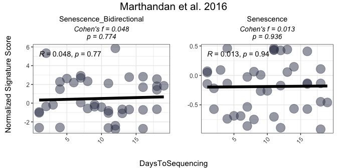
For users interested in viewing the overall distribution of scores across gene signatures, the PlotScores function can be used without specifying the GroupingVariable parameter. In this case, the function will automatically generate a grid of density plots, with each plot representing the distribution of scores for a specific gene signature. This provides a quick way to visualize how each gene signature is distributed across all samples, allowing users to assess the overall spread of the scores without grouping them by any metadata variable.
PlotScores(data = counts_example,
metadata = metadata_example,
gene_sets = list(Senescence_Bidirectional = SimpleSenescenceSignature_bidirectional,
Senescence = SimpleSenescenceSignature),
method ="logmedian",
ColorValues = NULL,
ncol = NULL,
nrow = NULL,
widthTitle=24,
limits = NULL,
title="Marthandan et al. 2016",
labsize=9,
titlesize = 12) 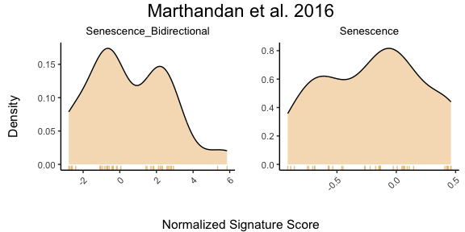
ssGSEA method
Likewise, the same approach can be applied for the ssGSEA method for score calculation, both for unidirectional and bidirectional signatures. The following example demonstrates how to calculate and visualize the scores using the ssGSEA method for both unidirectional and bidirectional signatures. The ssGSEA (single-sample Gene Set Enrichment Analysis) method (Barbie et al. (2009)) computes an enrichment score for each gene signature in each sample. It uses an adaptation of the gsva() function from the GSVA package to calculate these scores, representing the absolute enrichment of each gene set in individual samples. This method is useful for evaluating gene set enrichment when working with individual samples rather than groups, as described in the sections below.
senescence_triggers_colors <- c(
"none" = "#E57373", # Soft red
"Telomere shortening" = "#4FC3F7" # Vivid sky blue
)
cond_cohend <- list(A=c("Senescent"),
B=c("Proliferative"))
PlotScores(data = counts_example,
metadata = metadata_example,
gene_sets = list(Senescence_Bidirectional = SimpleSenescenceSignature_bidirectional,
Senescence = SimpleSenescenceSignature),
ColorVariable = "SenescentType",
Variable="Condition",
method ="ssGSEA",
ColorValues = senescence_triggers_colors,
ConnectGroups=TRUE,
ncol = NULL,
nrow = NULL,
widthTitle=24,
limits = NULL,
legend_nrow = 1,
pointSize=4,
compute_cohen=T,
cond_cohend=cond_cohend,
title="Marthandan et al. 2016",
labsize=9,
titlesize = 12) Ranking method
The ranking method computes gene signature scores for each sample by ranking the expression of signature genes in the dataset and normalizing the score based on the total number of genes. This method evaluates the relative expression of genes within each signature, providing a score based on the rank of gene expression in each sample.
The following example demonstrates the use of the “ranking” method for both unidirectional and bidirectional signatures:
senescence_triggers_colors <- c(
"none" = "#E57373", # Soft red
"Telomere shortening" = "#4FC3F7" # Vivid sky blue
)
cond_cohend <- list(A=c("Senescent"),
B=c("Proliferative"))
PlotScores(data = counts_example,
metadata = metadata_example,
gene_sets = list(Senescence_Bidirectional = SimpleSenescenceSignature_bidirectional,
Senescence = SimpleSenescenceSignature),
ColorVariable = "SenescentType",
Variable="Condition",
method ="ranking",
ColorValues = senescence_triggers_colors,
ConnectGroups=TRUE,
ncol = NULL,
nrow = NULL,
widthTitle=24,
limits = NULL,
legend_nrow = 1,
pointSize=4,
compute_cohen=T,
cond_cohend=cond_cohend,
title="Marthandan et al. 2016",
labsize=9,
titlesize = 12) 
All methods
To compare various metrics across different condition combinations, violin plots may not always be the best choice. In such cases, users can setmethod = "all" to generate a summary heatmap and volcano-like plot. The function will return one heatmap per gene set, with rows corresponding to all possible combinations of values in the GroupingVariable. In parenthesis is represented the p-value, adjusted using the BH method, and corrected by contrast and signature. It will also return a volcano-like plot (Cohen’s d effect sizes vs -log10(adjusted p-values)), where each dot represents a method-signature pair, faceted by contrast. The dashed lines represent user-defined thresholds for significance and effect size.
The mode parameter controls how contrasts are generated for categorical variables, allowing users to adjust the complexity of the analysis:
- “simple”: Performs the minimal number of contrasts, typically comparing each category to a baseline (e.g., for a factor with levels A, B, C and D, it may generate A - B, A - C, A - D, B - C, B - D, C - D).
- “medium”: Expands on the simple mode by including additional pairwise comparisons between groups (e.g., A - (B + C + D), B - (A + C + D), etc).
- “extensive”: Conducts all possible comparisons, including complex interactions if applicable, providing the most comprehensive analysis. (e.g., (A + B) - (C + D)).
Overall_Scores <- PlotScores(data = counts_example,
metadata = metadata_example,
gene_sets=list(Senescence_Bidirectional = SimpleSenescenceSignature_bidirectional,
Senescence = SimpleSenescenceSignature),
Variable="Condition",
method ="all",
ncol = NULL,
nrow = NULL,
widthTitle=30,
limits = c(0,3.5),
title="Marthandan et al. 2016",
titlesize = 10,
ColorValues = list(heatmap=c("#F9F4AE", "#B44141"),
volcano=c(Senescence="#A07395",
Senescence_Bidirectional="#CA7E45")),
mode="simple",
widthlegend=30,
sig_threshold=0.05,
cohen_threshold=0.6,
pointSize=6,
colorPalette="Paired")
Overall_Scores$heatmap
Overall_Scores$volcano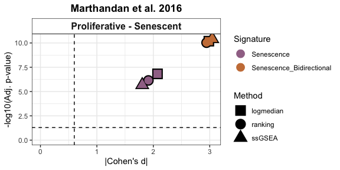
Classification Potential of Gene Signatures
The ROC_Scores and AUC_Scores functions allow users to evaluate the classification potential of gene set scores based on ROC curves and AUC values, respectively. These functions help assess how well a given score can differentiate between conditions, based on predefined contrasts. Besides method="all", these functions can also be used for each method individually.
The ROC_Scores function generates ROC curves for different scoring methods across contrasts, allowing users to visualize performance differences.
ROC_Scores(data = counts_example,
metadata = metadata_example,
gene_sets=list(Senescence_Bidirectional = SimpleSenescenceSignature_bidirectional,
Senescence = SimpleSenescenceSignature),
method = "all",
variable ="Condition",
colors = c(logmedian = "#3E5587", ssGSEA = "#B65285", ranking = "#B68C52"),
grid = TRUE,
spacing_annotation=0.3,
ncol=NULL,
nrow=1,
mode = "simple",
widthTitle = 28,
titlesize = 10,
title="Marthandan et al. 2016") 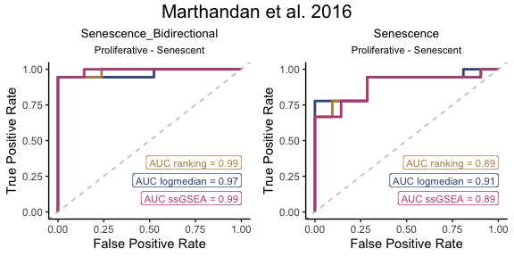
The AUC_Scores function generates heatmaps for each gene signature, with methods as columns and contrasts as rows, summarizing AUC values in a heatmap format.
AUC_Scores(data = counts_example,
metadata = metadata_example,
gene_sets=list(Senescence_Bidirectional = SimpleSenescenceSignature_bidirectional,
Senescence = SimpleSenescenceSignature),
method = "all",
mode = "simple",
variable="Condition",
nrow = NULL,
ncol = NULL,
limits = NULL,
widthTitle = 28,
titlesize = 10,
ColorValues = c("#F9F4AE", "#B44141"),
title="Marthandan et al. 2016") 
False Discovery Rate (FDR) Calculations
The user can assess the significance of gene signature scores by comparing observed effect sizes against those originated by random signatures. For each original gene signature, the function calculates the observed Cohen’s d (and p‑value) using (GroupingVariable). It then generates a number of simulated signatures (number_of_sims) by randomly sampling genes from a user provided gene list (gene_list) and computes their Cohen’s d values. The simulation results are visualised as violin plots that display the distribution of Cohen’s d values for each method, overlaid with the observed values of the original signatures, and a 95th percentile threshold. Significance is indicated by distinct point shapes based on the associated p‑value.
FDR_Simulation(data = counts_example,
metadata = metadata_example,
original_signatures = list(Senescence_Bidirectional = SimpleSenescenceSignature_bidirectional,
Senescence = SimpleSenescenceSignature),
gene_list = row.names(counts_example),
number_of_sims = 10,
title = "Marthandan et al. 2016",
widthTitle = 30,
Variable = "Condition",
titlesize = 12,
pointSize = 5,
labsize = 10,
mode = "simple",
ColorValues=NULL,
ncol=NULL,
nrow=NULL ) 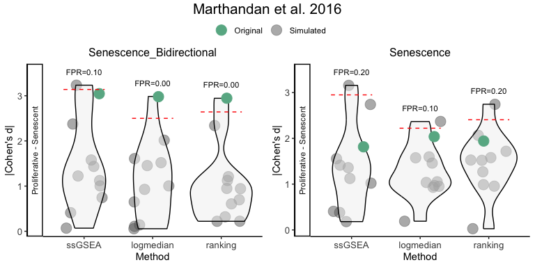
Score association with Chosen Variables
When analyzing data, it is often unclear whether a given variable is meaningfully associated with a target score. To assist in this exploratory process, the package provides statistical tests and visualizations to assess relationships between variables of different types.
- Overall effects: Linear models estimate effect sizes (Cohen’s f) for numeric and categorical variables.
- Pairwise contrasts: Categorical variables are compared across all possible contrasts using Cohen’s d with adjusted p-values. If categorical variables have more than 10 unique values, a warning is issued to ensure meaningful interpretation.
- Visual insights: Lollipop plots highlight effect sizes, contrast plots compare groups, and distribution plots reveal score patterns.
The function returns a structured list containing:
- Overall: Effect sizes and p-values for each variable.
- Contrasts: Pairwise comparisons for categorical variables.
- plot: A combined visualization summarizing all results.
- plot_contrasts, plot_overall, plot_distributions: Individual plots for further exploration.
This approach allows users to quickly identify potential relationships between scores and predictor variables, guiding further analysis.
This approach requires that the user is analysing a specific method for score calculation and gene signature. For illustration purposes, we will go with the logmedian method and compare the two signatures for Senescence, using the mode=extensive.
options(error=recover)
results_scoreassoc_bidirect <- Score_VariableAssociation(data = counts_example,
metadata = metadata_example,
cols = c("Condition","person","days"),
method="logmedian",
gene_set = list(Senescence = SimpleSenescenceSignature ),
mode="extensive",
nonsignif_color = "white", signif_color = "red", saturation_value=NULL,sig_threshold = 0.05,
widthlabels=30, labsize=10, title=NULL, titlesize=14, pointSize=5, discrete_colors=NULL,
continuous_color = "#8C6D03", color_palette = "Set2")
results_scoreassoc_bidirect$Overall
#> Variable Cohen_f P_Value
#> 1 Condition 1.06180763 1.506777e-07
#> 2 person 0.12648382 7.514973e-01
#> 3 days 0.01324252 9.362331e-01
results_scoreassoc_bidirect$Contrasts
#> Variable Contrast Group1 Group2
#> 1 Condition Proliferative - Senescent Proliferative Senescent
#> 2 person Ana - John Ana John
#> 3 person Ana - Francisca Ana Francisca
#> 4 person Francisca - John Francisca John
#> 5 person Ana - (Francisca + John) Ana Francisca + John
#> 6 person (Ana + Francisca) - John Ana + Francisca John
#> 7 person (Ana + John) - Francisca Ana + John Francisca
#> CohenD PValue padj
#> 1 2.07459395 1.506777e-07 1.054744e-06
#> 2 0.04500138 9.210884e-01 9.210884e-01
#> 3 -0.23159722 5.182369e-01 8.332768e-01
#> 4 0.26842164 5.641611e-01 8.332768e-01
#> 5 -0.14831958 6.487018e-01 8.332768e-01
#> 6 0.15396594 7.142373e-01 8.332768e-01
#> 7 -0.25123032 4.501287e-01 8.332768e-01
results_scoreassoc_bidirect <- Score_VariableAssociation(data = counts_example,
metadata = metadata_example,
cols = c("Condition","person","days"),
method="logmedian",
gene_set = list(Senescence_Bidirectional = SimpleSenescenceSignature_bidirectional),
mode="extensive",
nonsignif_color = "white", signif_color = "red", saturation_value=NULL,sig_threshold = 0.05,
widthlabels=30, labsize=10, title=NULL, titlesize=14, pointSize=5, discrete_colors=NULL,
continuous_color = "#8C6D03", color_palette = "Set2")
results_scoreassoc_bidirect$Overall
#> Variable Cohen_f P_Value
#> 1 Condition 1.52736028 3.278479e-11
#> 2 person 0.17329879 5.870614e-01
#> 3 days 0.04759144 7.738244e-01
results_scoreassoc_bidirect$Contrasts
#> Variable Contrast Group1 Group2
#> 1 Condition Proliferative - Senescent Proliferative Senescent
#> 2 person Ana - John Ana John
#> 3 person Ana - Francisca Ana Francisca
#> 4 person Francisca - John Francisca John
#> 5 person Ana - (Francisca + John) Ana Francisca + John
#> 6 person (Ana + Francisca) - John Ana + Francisca John
#> 7 person (Ana + John) - Francisca Ana + John Francisca
#> CohenD PValue padj
#> 1 -2.98420572 3.278479e-11 2.294935e-10
#> 2 0.19639043 6.661502e-01 8.626076e-01
#> 3 0.39561859 2.729488e-01 6.132382e-01
#> 4 -0.15441156 7.393780e-01 8.626076e-01
#> 5 0.31910742 3.294782e-01 6.132382e-01
#> 6 0.03157417 9.400893e-01 9.400893e-01
#> 7 0.31127790 3.504218e-01 6.132382e-01Enrichment-Based Methods
Differentially Expressed Genes
The calculateDE function in the markeR package leverages the limma framework to compute differential gene expression statistics from raw count data. This function is highly flexible and supports several modes of operation depending on the user’s experimental design. In the examples below, we illustrate three common scenarios:
-
Automatic Design Matrix with Contrasts: In the first example, the design matrix is built automatically from the metadata using a specified variable (here,
"Condition"). A contrast (in this case, “Senescent - Proliferative") is then applied to extract the differential expression statistics between the two conditions. This is ideal when you have a simple design and want to quickly compute contrasts without manually creating the design matrix. -
Custom Model Formula with Coefficient Extraction: The second example demonstrates how to supply a custom model formula (e.g.,
~Condition) directly to the function. This allows you to have fine control over the design, and you can specify which coefficients you want to extract from the fitted model. This approach is particularly useful for more complex designs or when you wish to extract multiple statistics from a single model. You can leave the parameter"Contrast"asNULL, and the function will return all coefficients (i.e. not performing any contrasts). -
Providing an Externally Constructed Design Matrix: In the third example, you create the design matrix externally using
model.matrix()(for instance, with no intercept using~0 + Condition). By supplying this design matrix directly tocalculateDE, you have full control over its construction. A contrast is then applied to obtain the desired differential expression results. This method is recommended when you require complete customization of the design matrix or when you have pre-processed your design externally. You can leave the parameter"Contrast"asNULL, and the function will return all possible coefficients based on your design matrix alone.
Below are the corresponding code snippets demonstrating each scenario, by answering the same question: What are the genes differentially expressed between senescence and proliferative cells?
# Example 1: Build design matrix from variables (Condition) and apply a contrast.
# In this case, the design matrix is constructed automatically using the variable "Condition".
DEGs <- calculateDE(data = counts_example,
metadata = metadata_example,
variables = "Condition",
contrasts = c("Senescent - Proliferative"))
DEGs$`Senescent - Proliferative`[1:5,]
#> NULL
# Example 2: Use a custom model formula.
# Here, a model formula is provided (as a string that will be converted to a formula).
# Specific coefficients are extracted.
# because we are using one of the conditions as the baseline, the other one will give the difference between the two
DEGs2 <- calculateDE(data = counts_example,
metadata = metadata_example,
variables = NULL,
lmexpression = "~Condition",
contrasts = c("Senescent"))
DEGs2$`Senescent`[1:5,]
#> logFC AveExpr t P.Value adj.P.Val B
#> CCND2 3.816674 4.406721 12.393130 2.747202e-15 2.435712e-12 24.70982
#> MKI67 -3.581174 6.605339 -9.197510 2.007135e-11 4.992097e-10 15.96203
#> PTCHD4 3.398914 3.556007 10.740867 2.318137e-13 3.002118e-11 20.35906
#> KIF20A -3.365481 5.934893 -9.728709 4.176398e-12 1.844336e-10 17.51106
#> CDC20 -3.304602 6.104079 -9.801724 3.375212e-12 1.657492e-10 17.72110
# Example 3: Supply a custom design matrix directly.
# Here, the design matrix is created externally (using no intercept, for instance).
design <- model.matrix(~0 + Condition, data = metadata_example)
colnames(design) <- c("Proliferative","Senescent")
DEGs3 <- calculateDE(data = counts_example,
metadata = NULL,
variables = NULL,
modelmat = design,
contrasts = c("Senescent - Proliferative"))
DEGs3$`Senescent - Proliferative`[1:5,]
#> NULLAfter running your differential expression analysis (for example, using the calculateDE function), you can visualize your results with the plotVolcano function. This function provides a flexible interface for exploring your data by allowing you to:
-
Plot Differentially Expressed Genes:
Display a volcano plot with your chosen statistics (e.g., log fold-change on the x-axis and –log₁₀ adjusted p-value on the y-axis). -
Color Interesting Genes:
Highlight genes that pass user-specified thresholds by adjustingthreshold_yand/orthreshold_x. -
Annotate Top and Bottom N Genes:
Optionally, label the top (and bottom) N genes based on the chosen statistic to quickly identify the most significant genes. -
Highlight Gene Signatures: If the user provide a list of gene signatures using the
genesargument, the function can highlight these genes in the plot. The user can also specify distinct colors for upregulated and downregulated if their direction is known, or a color for genes that don’t have a defined direction.
Below is an example usage that simply plots the differential expression results (with default settings). In this example, no thresholds or gene signatures are specified, so the function produces a basic volcano plot based on the DEResultsList.
# Plot Differentially Expressed Genes:
plotVolcano(DEGs, genes = NULL, N = NULL,
x = "logFC", y = "-log10(adj.P.Val)", pointSize = 2,
color = "#6489B4", highlightcolor = "#05254A", nointerestcolor = "#B7B7B7",
threshold_y = NULL, threshold_x = NULL,
xlab = NULL, ylab = NULL, ncol = NULL, nrow = NULL, title = "Marthandan et al. 2016",
labsize = 8, widthlabs = 25, invert = FALSE)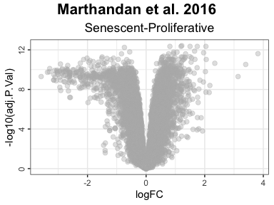
# Color Interesting Genes:
plotVolcano(DEGs, genes = NULL, N = NULL,
x = "logFC", y = "-log10(adj.P.Val)", pointSize = 2,
color = "#6489B4", highlightcolor = "#05254A", nointerestcolor = "#B7B7B7",
threshold_y = 0.0001, threshold_x = 1,
xlab = NULL, ylab = NULL, ncol = NULL, nrow = NULL, title = "Marthandan et al. 2016",
labsize = 8, widthlabs = 25, invert = FALSE)
# Annotate Top and Bottom N Genes:
plotVolcano(DEGs, genes = NULL, N = 5,
x = "logFC", y = "-log10(adj.P.Val)", pointSize = 2,
color = "pink", highlightcolor = "#05254A", nointerestcolor = "#B7B7B7",
threshold_y = NULL, threshold_x = NULL,
xlab = NULL, ylab = NULL, ncol = NULL, nrow = NULL, title = "Marthandan et al. 2016",
labsize = 8, widthlabs = 25, invert = FALSE)
# Change order: signatures in columns, contrast in rows
plotVolcano(DEGs, genes = list(Senescence_Bidirectional = SimpleSenescenceSignature_bidirectional,
Senescence = SimpleSenescenceSignature),
N = NULL,
x = "logFC", y = "-log10(adj.P.Val)", pointSize = 2,
color = "#6489B4", highlightcolor = "#05254A", highlightcolor_upreg = "#038C65", highlightcolor_downreg = "#8C0303",nointerestcolor = "#B7B7B7",
threshold_y = NULL, threshold_x = NULL,
xlab = NULL, ylab = NULL, ncol = NULL, nrow = NULL, title = "Marthandan et al. 2016",
labsize = 10, widthlabs = 24, invert = TRUE)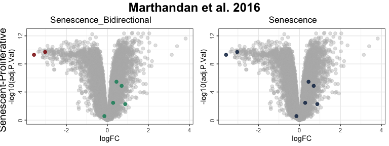
Note on Continuous Variables
If the user wants to analyze continuous variables (e.g., time points or dosage), they should use the lmexpression argument, instead of the variables argument. By using the variablesargument:
- It creates a no-intercept model, where each coefficient represents the mean expression at each unique time point.
- This structure is intended for categorical variables and requires contrasts, making it unsuitable for continuous variables.
# First example, using the variables argument.
# NOT suitable for continuous variables
DEGs_continuous <- calculateDE(data = counts_example,
metadata = metadata_example,
variables = "days")
DEGs_continuous$days[1:3,]
#> logFC AveExpr t P.Value adj.P.Val B
#> FN1 1.0251594 13.21879 12.06817 1.182743e-15 1.802499e-14 25.49668
#> EEF1A1 0.9953702 12.85091 12.02784 1.326991e-15 1.802499e-14 25.38357
#> GAPDH 0.9711606 12.53188 12.03413 1.303370e-15 1.802499e-14 25.40122By using the lmexpression, the user can treat continuous variables as such, and get meaningful gene expression changes with their variables of interest. By using the lmexpressionargument: - It includes automatically an intercept, representing the baseline expression (i.e., the expected expression when days = 0). - The days coefficient reflects how much expression changes per unit increase in days.
DEGs_continuous2 <- calculateDE(data = counts_example,
metadata = metadata_example,
lmexpression = "~days")
DEGs_continuous2$`(Intercept)`[1:3,]
#> logFC AveExpr t P.Value adj.P.Val B
#> FN1 13.19342 13.21879 76.83545 9.957323e-45 3.444421e-44 92.16135
#> EEF1A1 12.88033 12.85091 169.44074 2.735660e-58 1.885454e-56 120.69416
#> GAPDH 12.53905 12.53188 103.11616 9.157787e-50 6.880877e-49 103.27738
DEGs_continuous2$days[1:3,]
#> logFC AveExpr t P.Value adj.P.Val B
#> RNA45SN2 -0.07628608 7.712585 -1.626674 0.1117361 0.9997685 -6.018805
#> RNA18SN2 0.06743439 9.577467 1.554171 0.1280974 0.9997685 -6.129426
#> RNA18SN3 0.06743439 9.577467 1.554171 0.1280974 0.9997685 -6.129426This usage of the lmexpression parameter also allows the user to combine categorical variables with numeric variables:
-
Intercept: Baseline expression when days = 0 and Condition = Control. -
days: Change in expression per unit increase in days. - `Senescent: Difference in expression between Senescent and Control conditions.
DEGs_continuous3 <- calculateDE(data = counts_example,
metadata = metadata_example,
lmexpression = "~days + Condition")
DEGs_continuous3$`(Intercept)`[1:3,]
#> logFC AveExpr t P.Value adj.P.Val B
#> FN1 13.23994 13.21879 74.04645 1.265799e-43 3.210740e-43 89.73456
#> EEF1A1 12.94192 12.85091 179.29631 1.402180e-58 9.033979e-57 121.69861
#> GAPDH 12.71139 12.53188 147.86006 2.586838e-55 5.583501e-54 115.21324
DEGs_continuous3$days[1:3,]
#> logFC AveExpr t P.Value adj.P.Val B
#> RNA45SN2 -0.08056063 7.712585 -1.689209 0.09914647 0.9853746 -6.052523
#> RNA18SN2 0.06598991 9.577467 1.490666 0.14407989 0.9853746 -6.355482
#> RNA18SN3 0.06598991 9.577467 1.490666 0.14407989 0.9853746 -6.355482
DEGs_continuous3$Senescent[1:3,]
#> logFC AveExpr t P.Value adj.P.Val B
#> CCND2 3.863054 4.406721 12.344742 4.643461e-15 4.865503e-12 24.20437
#> MKI67 -3.655159 6.605339 -9.296026 1.907736e-11 5.010329e-10 16.02834
#> PTCHD4 3.453362 3.556007 10.774059 2.907380e-13 3.864144e-11 20.14942Gene Set Enrichment Analyses
To perform GSEA, use the runGSEA() function. This function takes a named list of differential expression results (one per contrast) and a set of gene signatures to compute enrichment scores.
DEGList: A list of differentially expressed genes (DEGs) for each contrast.-
gene_sets: A list of gene sets, where each entry can be:- A vector of genes (unidirectional analysis).
- A data frame where the first column is the gene name and the second column indicates the expected direction (+1 or -1, bidirectional analysis).
-
stat: The ranking statistic. If NULL, the ranking statistic is automatically selected unless manually specified:-
"B"for gene sets with no known direction (vectors). -
"t"for unidirectional or bidirectional gene sets (data frames). - If provided, this argument overrides the automatic selection.
-
It is important to note that the column corresponding to the adjusted p-value (padj) reflects p-values corrected for multiple testing by the Benjamini & Hochberg (BH) method, considering all contrasts in the list of differentially expressed genes (DEGsin the example below). This means that the same contrast will have a different adjusted p-value if running with a different set of contrasts, given that the results represent different research questions.
GSEAresults <- runGSEA(DEGList = DEGs,
gene_sets = list(Senescence_Bidirectional = SimpleSenescenceSignature_bidirectional,
Senescence = SimpleSenescenceSignature),
stat = NULL)
GSEAresults
#> $`Senescent-Proliferative`
#> pathway pval padj log2err ES NES
#> <char> <num> <num> <num> <num> <num>
#> 1: Senescence_Bidirectional 0.01838843 0.03677686 0.15267586 0.7068136 1.653726
#> 2: Senescence 0.14596611 0.14596611 0.04482895 0.5844505 1.338962
#> size leadingEdge stat_used
#> <int> <list> <char>
#> 1: 7 LMNB1,MKI67,GLB1,CDKN1A,CDKN2A,CCL2 t
#> 2: 7 LMNB1,MKI67 BDepending on the statistic used, the interpretation of the plots changes: when using the B statistic (by default, when the direction is not specified), the interpretation of the plot differs from the T statistic. This is because the B statistic focuses on whether genes are altered or not altered, without considering whether they are enriched or depleted.
-
B Statistic vs. T Statistic:
- The B statistic does not specify the direction (enriched or depleted) of the gene set. It only indicates whether genes are altered or not altered.
- The t statistic orders genes based on their enrichment or depletion.
-
Indication on the graphs:
- When using the B statistic, the plot will include “Altered Pathways” to reflect this focus on whether genes are altered.
- For the t statistic, the plot will include “Enriched/Depleted Pathways”, indicating that the plot focuses on the enrichment or depletion status of genes.
After running GSEA, you can visualize enrichment plots using plotGSEAenrichment(). This function generates enrichment plots for each gene signature and contrast, displaying also the Normalized Enrichment Scores (NES) and adjusted p-value for each enrichment result.
-
grid = TRUE: Arranges the plots in a grid for better visualization. -
titlesize: Adjusts title font size. -
nrow/ncol: Specifies the grid layout for arranging plots.
plotGSEAenrichment(GSEA_results=GSEAresults,
DEGList=DEGs,
gene_sets=list(Senescence_Bidirectional = SimpleSenescenceSignature_bidirectional,
Senescence = SimpleSenescenceSignature),
widthTitle=40, grid = T, titlesize = 10, nrow=1, ncol=2) 
The plotNESlollipop() function creates lollipop plots for visualizing Gene Set Enrichment Analysis (GSEA) results. Each plot displays pathways on the y-axis and Normalized Enrichment Scores (NES) on the x-axis, with color representing the adjusted p-value. The function supports multiple contrasts and includes options for customizing the color gradient, significance threshold, and plot layout. It can also arrange individual plots into a grid layout for comparative visualization.
plotNESlollipop(GSEA_results=GSEAresults,
saturation_value=NULL,
nonsignif_color = "#F4F4F4",
signif_color = "red",
sig_threshold = 0.05,
grid = FALSE,
nrow = NULL, ncol = NULL,
widthlabels=13,
title=NULL, titlesize=12)
#> $`Senescent-Proliferative`
The plotCombinedGSEA() function generates a scatter plot to visualize the results of Gene Set Enrichment Analysis (GSEA) across multiple contrasts. Each point represents a pathway, with:
- X-axis: Normalized Enrichment Score (NES)
- Y-axis: -log10 adjusted p-value (significance)
- Color: Pathways
- Shape: Different contrasts
- Dashed line: Significance threshold
This function helps compare enrichment results when the number of contrasts and the number of pathways is high. For this example, might not be too representative.
plotCombinedGSEA(GSEAresults, sig_threshold = 0.05, PointSize=6, widthlegend = 26 )
GSEA Association with Chosen Variables
Following the same rational presented in Score association with Chosen Variables, when analyzing data, it is often unclear whether a given variable is meaningfully associated with a target score. For the GSEA module, this can be particularly relevant when assessing whether gene expression patterns align with specific biological pathways or signatures.
The GSEA_VariableAssociation function automates this process by performing differential expression (DE) analysis across all possible contrasts for categorical variables or using linear modeling for continuous variables. It then applies Gene Set Enrichment Analysis (GSEA) to evaluate the enrichment of predefined gene sets, returning both numerical results and an intuitive lollipop plot for visualization. This approach helps users quickly identify significant associations between metadata variables and gene expression patterns.
Depending on the statistic used (B- or t-statistic):
-
Negative NES:
- t Statistic: A negative NES with the T statistic indicates that the gene set is depleted (i.e., the genes are under-expressed).
- B Statistic: A negative NES using the B statistic (with significant results) means that the genes are not altered, implying no significant change in their expression.
-
Dashed Lines:
- The dashed lines in the plot represent B statistic results with negative NES, meaning gene sets putatively not altered.
-
Subtitle Differences:
- When using the B statistic, the subtitle of the plot will read “Altered Contrasts” to reflect this focus on whether genes are altered.
- For the t statistic, the subtitle will read “Enriched/Depleted Contrasts”, indicating that the plot focuses on the enrichment or depletion status of genes.
options(error=recover)
GSEA_VariableAssociation(data=counts_example,
metadata=metadata_example,
cols=c("Condition","person","days"),
mode="simple",
gene_set=list(Senescence = SimpleSenescenceSignature),
saturation_value=NULL, nonsignif_color = "white", signif_color = "red",
sig_threshold = 0.05, widthlabels=30, labsize=10, titlesize=14, pointSize = 5)
#> $plot#>
#> $data
#> pathway pval padj log2err ES NES size
#> <char> <num> <num> <num> <num> <num> <int>
#> 1: Senescence 0.14596611 0.4378983 0.04482895 0.5844505 1.3389622 7
#> 2: Senescence 0.81534874 0.8596054 0.01825162 0.2197875 0.7218660 7
#> 3: Senescence 0.12206168 0.7323701 0.05892753 0.4198163 1.3797736 7
#> 4: Senescence 0.85960544 0.8596054 0.01599026 -0.2113031 -0.6810595 7
#> 5: Senescence 0.06299541 0.4378983 0.11671125 -0.4779552 -1.5523084 7
#> 6: Senescence 0.54673591 0.8201039 0.02231638 -0.2849369 -0.9161661 7
#> leadingEdge stat_used Contrast
#> <list> <char> <char>
#> 1: LMNB1,MKI67 B Proliferative - Senescent
#> 2: GLB1,TP53,CDKN1A B Ana - John
#> 3: LMNB1,CDKN1A,GLB1,CDKN2A,MKI67 B Ana - Francisca
#> 4: CCL2,CDKN1A,MKI67,GLB1,LMNB1,CDKN2A,... B Francisca - John
#> 5: LMNB1,MKI67,CCL2,CDKN2A,TP53,CDKN1A B intercept_days
#> 6: LMNB1,MKI67,CDKN2A,TP53,CCL2,CDKN1A B days
GSEA_VariableAssociation(data=counts_example,
metadata=metadata_example,
cols=c("Condition","person","days"),
mode="simple",
gene_set=list(Senescence_Bidirectional = SimpleSenescenceSignature_bidirectional),
saturation_value=NULL, nonsignif_color = "white", signif_color = "red",
sig_threshold = 0.05, widthlabels=30, labsize=10, titlesize=14, pointSize = 5)
#> $plot#>
#> $data
#> pathway pval padj log2err ES
#> <char> <num> <num> <num> <num>
#> 1: Senescence_Bidirectional 0.023760331 0.07128099 0.13405093 -0.7068136
#> 2: Senescence_Bidirectional 0.077863457 0.23359037 0.06946518 0.6399995
#> 3: Senescence_Bidirectional 0.006124402 0.07128099 0.25663502 0.7274186
#> 4: Senescence_Bidirectional 0.949172812 0.94917281 0.01513268 -0.2471009
#> 5: Senescence_Bidirectional 0.173793103 0.38632616 0.08982029 -0.4165066
#> 6: Senescence_Bidirectional 0.321938468 0.38632616 0.03305031 0.4899121
#> NES size leadingEdge stat_used
#> <num> <int> <list> <char>
#> 1: -1.6491022 7 LMNB1,MKI67,GLB1,CDKN1A,CDKN2A,CCL2 t
#> 2: 1.4615936 7 GLB1,TP53,CDKN1A t
#> 3: 1.7675900 7 LMNB1,CDKN1A,GLB1,CDKN2A,MKI67 t
#> 4: -0.5727763 7 CDKN2A,LMNB1,MKI67 t
#> 5: -1.2553035 7 MKI67,LMNB1,CCL2,CDKN2A,TP53,CDKN1A t
#> 6: 1.1260283 7 GLB1,CDKN1A,CCL2,CDKN2A,MKI67,LMNB1 t
#> Contrast
#> <char>
#> 1: Proliferative - Senescent
#> 2: Ana - John
#> 3: Ana - Francisca
#> 4: Francisca - John
#> 5: intercept_days
#> 6: days
GSEA_VariableAssociation(data=counts_example,
metadata=metadata_example,
cols=c("Condition","person","days"),
mode="extensive",
gene_set=list(Senescence = SimpleSenescenceSignature),
saturation_value=NULL, nonsignif_color = "white", signif_color = "red",
sig_threshold = 0.05, widthlabels=30, labsize=10, titlesize=14, pointSize = 5)
#> $plot#>
#> $data
#> pathway pval padj log2err ES NES size
#> <char> <num> <num> <num> <num> <num> <int>
#> 1: Senescence 0.14596611 0.6568475 0.04482895 0.5844505 1.3389622 7
#> 2: Senescence 0.81534874 0.9002970 0.01825162 0.2197875 0.7218660 7
#> 3: Senescence 0.12206168 0.9002970 0.05892753 0.4198163 1.3797736 7
#> 4: Senescence 0.85960544 0.9002970 0.01599026 -0.2113031 -0.6810595 7
#> 5: Senescence 0.13754081 0.9002970 0.05556785 0.4091501 1.3460917 7
#> 6: Senescence 0.72727273 0.9002970 0.01830571 -0.2423185 -0.7803526 7
#> 7: Senescence 0.90029699 0.9002970 0.01680350 0.1962844 0.6451577 7
#> 8: Senescence 0.06299541 0.6568475 0.11671125 -0.4779552 -1.5523084 7
#> 9: Senescence 0.54673591 0.9002970 0.02231638 -0.2849369 -0.9161661 7
#> leadingEdge stat_used Contrast
#> <list> <char> <char>
#> 1: LMNB1,MKI67 B Proliferative - Senescent
#> 2: GLB1,TP53,CDKN1A B Ana - John
#> 3: LMNB1,CDKN1A,GLB1,CDKN2A,MKI67 B Ana - Francisca
#> 4: CCL2,CDKN1A,MKI67,GLB1,LMNB1,CDKN2A,... B Francisca - John
#> 5: GLB1,CDKN1A,LMNB1,MKI67,TP53,CCL2,... B Ana - (Francisca + John)/2
#> 6: MKI67,LMNB1,CCL2 B (Ana + Francisca)/2 - John
#> 7: CDKN2A,LMNB1,MKI67,TP53,CDKN1A,CCL2,... B (Ana + John)/2 - Francisca
#> 8: LMNB1,MKI67,CCL2,CDKN2A,TP53,CDKN1A B intercept_days
#> 9: LMNB1,MKI67,CDKN2A,TP53,CCL2,CDKN1A B days
GSEA_VariableAssociation(data=counts_example,
metadata=metadata_example,
cols=c("Condition","person","days"),
mode="extensive",
gene_set=list(Senescence_Bidirectional = SimpleSenescenceSignature_bidirectional),
saturation_value=NULL, nonsignif_color = "white", signif_color = "red",
sig_threshold = 0.05, widthlabels=30, labsize=10, titlesize=14, pointSize = 5)
#> $plot#>
#> $data
#> pathway pval padj log2err ES
#> <char> <num> <num> <num> <num>
#> 1: Senescence_Bidirectional 0.023760331 0.1653589 0.13405093 -0.7068136
#> 2: Senescence_Bidirectional 0.077863457 0.3503856 0.06946518 0.6399995
#> 3: Senescence_Bidirectional 0.006124402 0.1653589 0.25663502 0.7274186
#> 4: Senescence_Bidirectional 0.949172812 0.9491728 0.01513268 -0.2471009
#> 5: Senescence_Bidirectional 0.018775817 0.1689824 0.14390962 0.6955465
#> 6: Senescence_Bidirectional 0.218617227 0.3784606 0.04038999 0.5527943
#> 7: Senescence_Bidirectional 0.280341218 0.3784606 0.03509657 0.4842608
#> 8: Senescence_Bidirectional 0.173793103 0.3784606 0.08982029 -0.4165066
#> 9: Senescence_Bidirectional 0.321938468 0.3784606 0.03305031 0.4899121
#> NES size leadingEdge stat_used
#> <num> <int> <list> <char>
#> 1: -1.6491022 7 LMNB1,MKI67,GLB1,CDKN1A,CDKN2A,CCL2 t
#> 2: 1.4615936 7 GLB1,TP53,CDKN1A t
#> 3: 1.7675900 7 LMNB1,CDKN1A,GLB1,CDKN2A,MKI67 t
#> 4: -0.5727763 7 CDKN2A,LMNB1,MKI67 t
#> 5: 1.6475408 7 GLB1,CDKN1A,LMNB1,MKI67,TP53,CCL2,... t
#> 6: 1.2409060 7 TP53,GLB1,CDKN1A t
#> 7: 1.1683551 7 CDKN2A,LMNB1,MKI67,CDKN1A,CCL2 t
#> 8: -1.2553035 7 MKI67,LMNB1,CCL2,CDKN2A,TP53,CDKN1A t
#> 9: 1.1260283 7 GLB1,CDKN1A,CCL2,CDKN2A,MKI67,LMNB1 t
#> Contrast
#> <char>
#> 1: Proliferative - Senescent
#> 2: Ana - John
#> 3: Ana - Francisca
#> 4: Francisca - John
#> 5: Ana - (Francisca + John)/2
#> 6: (Ana + Francisca)/2 - John
#> 7: (Ana + John)/2 - Francisca
#> 8: intercept_days
#> 9: days📩 For any questions or concerns, feel free to reach out:
Rita Martins-Silva
Email: rita.silva@gimm.pt